|
Arman Akbari I'm a first year PhD student in Computer Engineering at Northeastern University, supervised by Prof. Yanzhi Wang and Prof. Xuan Zhang. My research interests focus on Efficient Deep Learning, LLM, and Computer Vision. I got my B.Sc. in Computer Science from University of Tehran. Email / Google Scholar / LinkedIn / Github |

|
Research
My research centers on two main areas:
|

|
Bolt3D: Generating 3D Scenes in Seconds
Stanislaw Szymanowicz, Jason Y. Zhang, Pratul Srinivasan, Ruiqi Gao, Arthur Brussee, Aleksander Holynski, Ricardo Martin-Brualla, Jonathan T. Barron, Philipp Henzler ICCV, 2025 project page / arXiv By training a latent diffusion model to directly output 3D Gaussians we enable fast (~6 seconds on a single GPU) feed-forward 3D scene generation. |
|
Selected Publications
* means equal contribution
|
|
|
Preprints
|
|

|
Zhenglun Kong*, Yize Li*, Fanhu Zeng, Lei Xin, Shvat Messica, Xue Lin, Pu Zhao, Manolis Kellis, Hao Tang, Marinka Zitnik PDF / Code We argue that viewing token reduction purely from an efficiency perspective is fundamentally limited. Instead, we position token reduction as a core design principle in generative modeling. |

|
Zhenglun Kong*, Mufan Qiu*, John Boesen, Xiang Lin, Sukwon Yun, Tianlong Chen, Manolis Kellis, Marinka Zitnik PDF / We introduce SPATIA, a multi-scale generative and predictive model for spatial transcriptomics. SPATIA learns cell-level embeddings by fusing image-derived morphological tokens and transcriptomic vector tokens and then aggregates them at niche and tissue levels to capture spatial dependencies. |

|
Zhenglun Kong*, Zheng Zhan*, Shiyue Hou, Yifan Gong, Xin Meng, Pengwei Sui, Peiyan Dong, Xuan Shen, Zifeng Wang, Pu Zhao, Hao Tang, Stratis Ioannidis, Yanzhi Wang PDF / Code We propose a framework that adaptively selects and aggregates knowledge from diverse LLMs to build a single, stronger model, avoiding the high memory overhead of ensemble and inflexible weight merging. |
|
Published
|
|

|
Zhenglun Kong, Dongkuan Xu, Zhengang Li, Peiyan Dong, Hao Tang, Yanzhi Wang, Subhabrata Mukherjee [IJCV] International Journal of Computer Vision We introduce a truly efficient, hardware-oriented approach for searching efficient vision transformer structure. This approach has been optimized to seamlessly adapt to the constraints of the target hardware and fulfill the specific speed requirements. |

|
Pinrui Yu*, Zhenglun Kong*, Pu Zhao, Peiyan Dong, Hao Tang, Fei Sun, Xue Lin, Yanzhi Wang [WACV 2025] Winter Conference on Applications of Computer Vision We propose Q-TempFusion, a novel approach for temporal multi-sensor fusion designed to enhance the BEV model’s inference speed while keeping high predictive performance. |

|
Zheng Zhan*, Zhenglun Kong*, Yifan Gong, Yushu Wu, Zichong Meng, Hangyu Zheng, Xuan Shen, Stratis Ioannidis, Wei Niu, Pu Zhao, Yanzhi Wang [NeurIPS 2024] Advances in Neural Information Processing Systems PDF / Code We revisit the unique computational characteristics of SSMs and discover that naive application disrupts the sequential token positions. This insight motivates us to design a novel and general token pruning method specifically for SSM-based vision models. |

|
Zheng Zhan*, Yushu Wu*, Zhenglun Kong*, Changdi Yang, Yifan Gong, Xuan Shen, Xue Lin, Pu Zhao, Yanzhi Wang [EMNLP 2024] Conference on Empirical Methods in Natural Language Processing PDF / Code We propose a tailored, unified post-training token reduction method for SSMs. Our approach integrates token importance and similarity, thus taking advantage of both pruning and merging, to devise a fine-grained intra-layer token reduction strategy. |

|
Xuan Shen, Zhenglun Kong, Changdi Yang, Zhaoyang Han, Lei Lu, Peiyan Dong, Cheng Lyu, Chih-hsiang Li, Xuehang Guo, Zhihao Shu, Wei Niu, Miriam Leeser, Pu Zhao, Yanzhi Wang arXiv:2402.10787 PDF / Code We design an entropy \& distribution guided quantization method to reduce information distortion in quantized query, key, and attention maps, tackling the bottleneck of QAT for LLMs. |

|
Zhenglun Kong*, Peiyan Dong*, Xin Meng, Pinrui Yu, Yanyue Xie, Yifan Gong, Geng Yuan, Fei Sun, Hao Tang, Yanzhi Wang [NeurIPS 2023] Advances in Neural Information Processing Systems PDF / Code We present a hardware-oriented transformer-based framework for 3D detection tasks, which achieves higher detection precision and remarkable speedup across high-end and low-end GPUs. |

|
Peiyan Dong*, Zhenglun Kong*, Xin Meng, Peng Zhang, Hao Tang, Yanzhi Wang, Chih-Hsien Chou [ICML 2023] International Conference on Machine Learning PDF / Code We propose a novel speed-aware transformer for end-to-end object detectors, achieving high-speed inference on multiple devices. |

|
Zhenglun Kong, Haoyu Ma, Geng Yuan, Mengshu Sun, Yanyue Xie, Peiyan Dong, Yanzhi Wang, et al. [AAAI 2023 Oral] The Thirty-Seventh AAAI Conference on Artificial Intelligence PDF / Code We introduce sparsity into data and propose an end-to-end efficient training framework to accelerate ViT training and inference. |

|
Xuan Shen, Zhenglun Kong, Minghai Qin, Peiyan Dong, Geng Yuan, Xin Meng, Hao Tang, Xiaolong Ma, Yanzhi Wang [IJCAI 2023 Oral] The 32nd International Joint Conference on Artificial Intelligence PDF / Code We generalize the LTH for ViTs to input data consisting of image patches inspired by the input dependence of ViTs. That is, there exists a subset of input image patches such that a ViT can be trained from scratch by using only this subset of patches and achieve similar accuracy to the ViTs trained by using all image patches. |

|
Zhenglun Kong, Peiyan Dong, Xiaolong Ma, Xin Meng, Mengshu Sun, Wei Niu, Xuan Shen, Geng Yuan, Bin Ren, Minghai Qin, Hao Tang, Yanzhi Wang [ECCV 2022] European Conference on Computer Vision CVPRW 2022 Spotlight PDF / Code We propose a dynamic, latency-aware soft token pruning framework for Vision Transformer. Our framework significantly reduces the computation cost of ViTs while maintaining comparable performance on image classification. |

|
Bingbing Li*, Zhenglun Kong*, Tianyun Zhang, Ji Li, Zhengang Li, Hang Liu, Caiwen Ding [EMNLP 2020 Findings] Conference on Empirical Methods in Natural Language Processing PDF / Code We propose an efficient transformer-based large-scale language representation using hardware-friendly block structure pruning. We incorporate the reweighted group Lasso into block-structured pruning for optimization. |

|
Wei Niu*, Zhenglun Kong*, Geng Yuan, Weiwen Jiang, Jiexiong Guan, Caiwen Ding, Pu Zhao, Sijia Liu, Bin Ren, Yanzhi Wang [IJCAI 2021 Demo] 30th International Joint Conference on Artificial Intelligence We propose a compression-compilation codesign framework that can guarantee BERT model to meet both resource and real-time specifications of mobile devices. |

|
Zhenglun Kong, Ting Li, Junyi Luo, Shengpu Xu Journal of Healthcare Engineering We realize automatic image segmentation with convolutional neural network to extract the accurate contours of four tissues: the skull, cerebrospinal fluid (CSF), grey matter (GM), and white matter (WM) on 5 MRI head image datasets. |

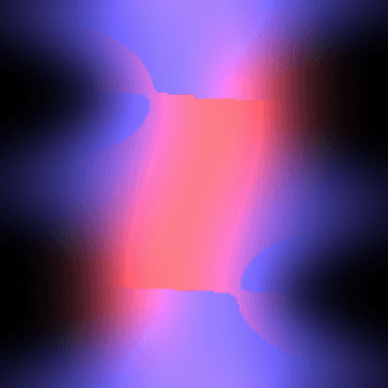
Alexander Mai, Peter Hedman, George Kopanas, Dor Verbin, David Futschik, Qiangeng Xu, Falko Kuester, Jonathan T. Barron, Yinda Zhang
ICCV, 2025
project page / arXiv
Raytracing constant-density ellipsoids yields more accurate and flexible radiance fields than splatting Gaussians, and still runs in real-time.

Rundi Wu, Ruiqi Gao, Ben Poole, Alex Trevithick, Changxi Zheng, Jonathan T. Barron, Aleksander Holynski
CVPR, 2025 (Oral Presentation)
project page / arXiv
An approach for turning a video into a 4D radiance field that can be rendered in real-time. When combined with a text-to-video model, this enables text-to-4D.
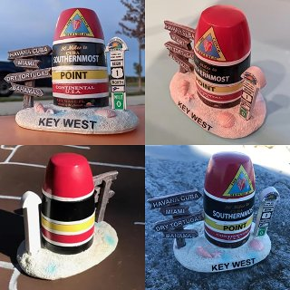
Hadi Alzayer, Philipp Henzler, Jonathan T. Barron, Jia-Bin Huang, Pratul P. Srinivasan, Dor Verbin
CVPR, 2025 (Highlight)
project page / arXiv
Images taken under extreme illumination variation can be made consistent with diffusion, and this enables high-quality 3D reconstruction.
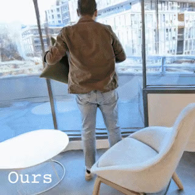
Alex Trevithick, Roni Paiss, Philipp Henzler, Dor Verbin, Rundi Wu, Hadi Alzayer, Ruiqi Gao, Ben Poole, Jonathan T. Barron, Aleksander Holynski, Ravi Ramamoorthi, Pratul P. Srinivasan
CVPR, 2025
project page / arXiv
Simulating the world with video models lets you make inconsistent captures consistent.
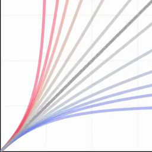
Jonathan T. Barron
arXiv, 2025
tweet / arXiv
A slight tweak to the Box-Cox power transform generalizes a variety of curves, losses, kernel functions, probability distributions, bump functions, and neural network activation functions.
Ruiqi Gao*, Aleksander Holynski*, Philipp Henzler, Arthur Brussee, Ricardo Martin Brualla, Pratul P. Srinivasan, Jonathan T. Barron, Ben Poole*
NeurIPS, 2024 (Oral Presentation)
project page / arXiv
A single model built around diffusion and NeRF that does text-to-3D, image-to-3D, and few-view reconstruction, trains in 1 minute, and renders at 60FPS in a browser.
Dor Verbin, Pratul Srinivasan, Peter Hedman, Benjamin Attal,
Ben Mildenhall, Richard Szeliski, Jonathan T. Barron
SIGGRAPH Asia, 2024
project page / arXiv
Carefully casting reflection rays lets us synthesize photorealistic specularities in real-world scenes.
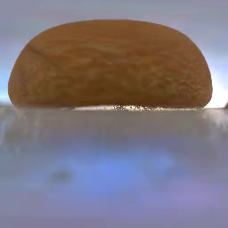
Benjamin Attal, Dor Verbin, Ben Mildenhall, Peter Hedman,
Jonathan T. Barron, Matthew O'Toole, Pratul P. Srinivasan
ECCV, 2024 (Oral Presentation)
project page / arXiv
A more physically-accurate inverse rendering system based on radiance caching for recovering geometry, materials, and lighting from RGB images of an object or scene.
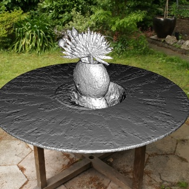
Pratul Srinivasan, Stephan J. Garbin, Dor Verbin, Jonathan T. Barron, Ben Mildenhall
ECCV, 2024
project page / video / arXiv
Neural fields let you recover editable UV mappings for the challenging geometries produced by NeRF-like models.

Christian Reiser, Stephan J. Garbin, Pratul Srinivasan, Dor Verbin, Richard Szeliski, Ben Mildenhall, Jonathan T. Barron, Peter Hedman*, Andreas Geiger*
SIGGRAPH, 2024
project page / video / arXiv
Applying anti-aliasing to a discrete opacity grid lets you render a hard representation into a soft image, and this enables highly-detailed mesh recovery.

Daniel Duckworth*, Peter Hedman*, Christian Reiser, Peter Zhizhin, Jean-François Thibert, Mario Lučić, Richard Szeliski, Jonathan T. Barron
SIGGRAPH, 2024 (Honorable Mention)
project page / video / arXiv
Distilling a Zip-NeRF into a tiled set of MERFs lets you fly through radiance fields on laptops and smartphones at 60 FPS.
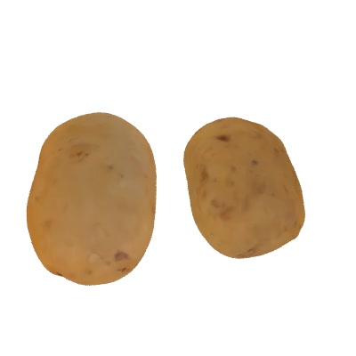
Dor Verbin, Ben Mildenhall, Peter Hedman,
Jonathan T. Barron, Todd Zickler, Pratul Srinivasan
CVPR, 2024 (Oral Presentation)
project page / video / arXiv
Shadows cast by unobserved occluders provide a high-frequency cue for recovering illumination and materials.
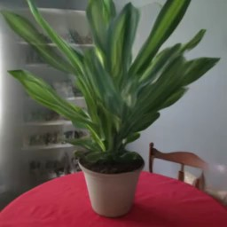
Rundi Wu*, Ben Mildenhall*, Philipp Henzler, Keunhong Park, Ruiqi Gao, Daniel Watson, Pratul P. Srinivasan, Dor Verbin, Jonathan T. Barron, Ben Poole, Aleksander Holynski*
CVPR, 2024
project page / arXiv
Using a multi-image diffusion model as a regularizer lets you recover high-quality radiance fields from just a handful of images.
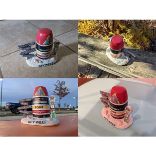
Andreas Engelhardt, Amit Raj, Mark Boss, Yunzhi Zhang, Abhishek Kar, Yuanzhen Li, Deqing Sun, Ricardo Martin Brualla, Jonathan T. Barron, Hendrik P.A. Lensch, Varun Jampani
CVPR, 2024
project page / video / arXiv
A class-agnostic inverse rendering solution for turning in-the-wild images of an object into a relightable 3D asset.
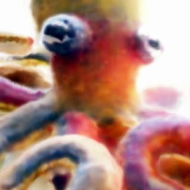
Clinton Wang, Peter Hedman, Polina Golland, Jonathan T. Barron, Daniel Duckworth
CVPR Neural Rendering Intelligence, 2024
arXiv
Parameter interpolation enables high-quality large-scale scene reconstruction and out-of-core training and rendering.
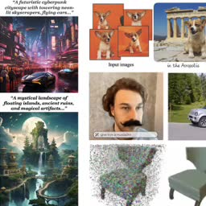
Ryan Po, Wang Yifan, Vladislav Golyanik, Kfir Aberman, Jonathan T. Barron, Amit H. Bermano, Eric Ryan Chan, Tali Dekel, Aleksander Holynski, Angjoo Kanazawa, C. Karen Liu, Lingjie Liu, Ben Mildenhall, Matthias Nießner, Björn Ommer, Christian Theobalt, Peter Wonka, Gordon Wetzstein
Eurographics State-of-the-Art Report, 2024
A survey of recent progress in diffusion models for images, videos, and 3D.
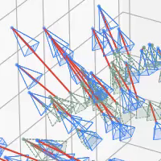
Keunhong Park, Philipp Henzler, Ben Mildenhall, Jonathan T. Barron, Ricardo Martin-Brualla
SIGGRAPH Asia, 2023
project page / arXiv
Preconditioning based on camera parameterization helps NeRF and camera extrinsics/intrinsics optimize better together.

Jonathan T. Barron, Ben Mildenhall, Dor Verbin, Pratul Srinivasan, Peter Hedman
ICCV, 2023 (Oral Presentation, Best Paper Finalist)
project page / video / arXiv
Combining mip-NeRF 360 and grid-based models like Instant NGP lets us reduce error rates by 8%–77% and accelerate training by 24x.
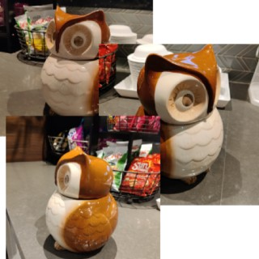
Amit Raj, Srinivas Kaza, Ben Poole, Michael Niemeyer, Nataniel Ruiz, Ben Mildenhall, Shiran Zada, Kfir Aberman, Michael Rubinstein, Jonathan T. Barron, Yuanzhen Li, Varun Jampani
ICCV, 2023
project page / arXiv
Combining DreamBooth (personalized text-to-image) and DreamFusion (text-to-3D) yields high-quality, subject-specific 3D assets with text-driven modifications
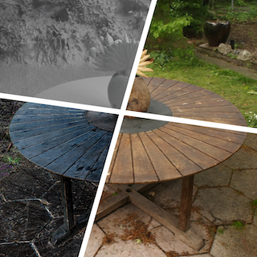
Lior Yariv*, Peter Hedman*, Christian Reiser, Dor Verbin,
Pratul Srinivasan, Richard Szeliski, Jonathan T. Barron, Ben Mildenhall
SIGGRAPH, 2023
project page / video / arXiv
We use SDFs to bake a NeRF-like model into a high quality mesh and do real-time view synthesis.

Christian Reiser, Richard Szeliski, Dor Verbin, Pratul Srinivasan,
Ben Mildenhall, Andreas Geiger, Jonathan T. Barron, Peter Hedman
SIGGRAPH, 2023
project page / video / arXiv
We use volumetric rendering with a sparse 3D feature grid and 2D feature planes to do real-time view synthesis.
Yifan Jiang, Peter Hedman, Ben Mildenhall, Dejia Xu,
Jonathan T. Barron, Zhangyang Wang, Tianfan Xue
CVPR, 2023
project page / arXiv
Accounting for misalignment due to scene motion or calibration errors improves NeRF reconstruction quality.
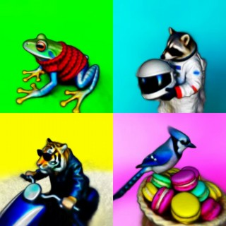
Ben Poole, Ajay Jain, Jonathan T. Barron, Ben Mildenhall
ICLR, 2023 (Oral Presentation, Outstanding Paper Award)
project page / arXiv / gallery
We optimize a NeRF from scratch using a pretrained text-to-image diffusion model to do text-to-3D generative modeling.
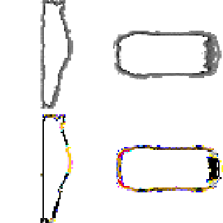
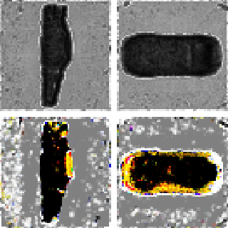
Guandao Yang, Abhijit Kundu, Leonidas J. Guibas, Jonathan T. Barron, Ben Poole
ICLR Workshop, 2023
Training a diffusion model on grid-based NeRFs lets you (conditionally) sample NeRFs.
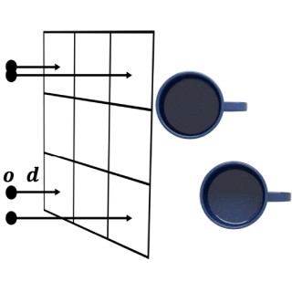
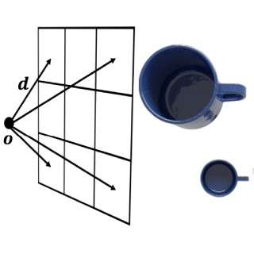
Lin Yen-Chen, Pete Florence, Andy Zeng, Jonathan T. Barron, Yilun Du, Wei-Chiu Ma, Anthony Simeonov, Alberto Rodriguez, Phillip Isola
CoRL, 2022
NeRF lets us synthesize novel orthographic views that work well with pixel-wise algorithms for robotic manipulation.
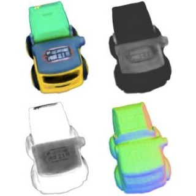

Mark Boss, Andreas Engelhardt, Abhishek Kar, Yuanzhen Li, Deqing Sun, Jonathan T. Barron, Hendrik P. A. Lensch, Varun Jampani
NeurIPS, 2022
project page / video / arXiv
A joint optimization framework for estimating shape, BRDF, camera pose, and illumination from in-the-wild image collections.
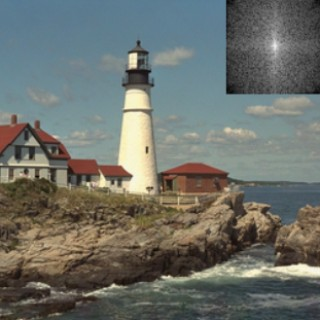
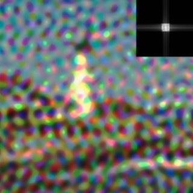
Guandao Yang*, Sagie Benaim*, Varun Jampani, Kyle Genova, Jonathan T. Barron, Thomas Funkhouser, Bharath Hariharan, Serge Belongie
NeurIPS, 2022
Representing neural fields as a composition of manipulable and interpretable components lets you do things like reason about frequencies and scale.
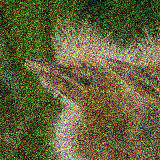
Yifan Jiang, Bartlomiej Wronski, Ben Mildenhall,
Jonathan T. Barron, Zhangyang Wang, Tianfan Xue
ECCV, 2022
project page / arXiv
We denoise images efficiently by predicting spatially-varying kernels at low resolution and using a fast fused op to jointly upsample and apply these kernels at full resolution.
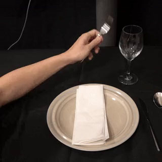
Lin Yen-Chen, Pete Florence, Jonathan T. Barron,
Tsung-Yi Lin, Alberto Rodriguez, Phillip Isola
ICRA, 2022
project page / arXiv / video / code / colab
NeRF works better than RGB-D cameras or multi-view stereo when learning object descriptors.
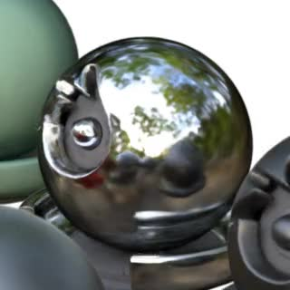
Dor Verbin, Peter Hedman, Ben Mildenhall,
Todd Zickler, Jonathan T. Barron, Pratul Srinivasan
CVPR, 2022 (Oral Presentation, Best Student Paper Honorable Mention)
project page / arXiv / video
Explicitly modeling reflections in NeRF produces realistic shiny surfaces and accurate surface normals, and lets you edit materials.
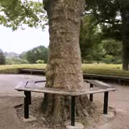
Jonathan T. Barron, Ben Mildenhall, Dor Verbin, Pratul Srinivasan, Peter Hedman
CVPR, 2022 (Oral Presentation)
project page / arXiv / video
mip-NeRF can be extended to produce realistic results on unbounded scenes.

Ben Mildenhall, Peter Hedman, Ricardo Martin-Brualla,
Pratul Srinivasan, Jonathan T. Barron
CVPR, 2022 (Oral Presentation)
project page / arXiv / video
Properly training NeRF on raw camera data enables HDR view synthesis and bokeh, and outperforms multi-image denoising.
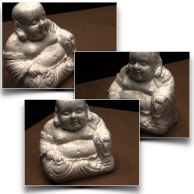
Michael Niemeyer, Jonathan T. Barron, Ben Mildenhall,
Mehdi S. M. Sajjadi, Andreas Geiger, Noha Radwan
CVPR, 2022 (Oral Presentation)
project page / arXiv / video
Regularizing unseen views during optimization enables view synthesis from as few as 3 input images.
Matthew Tancik, Vincent Casser, Xinchen Yan, Sabeek Pradhan,
Ben Mildenhall, Pratul Srinivasan, Jonathan T. Barron, Henrik Kretzschmar
CVPR, 2022 (Oral Presentation)
project page / arXiv / video
We can do city-scale reconstruction by training multiple NeRFs with millions of images.
Chung-Yi Weng, Brian Curless, Pratul Srinivasan,
Jonathan T. Barron, Ira Kemelmacher-Shlizerman
CVPR, 2022 (Oral Presentation)
project page / arXiv / video
Combining NeRF with pose estimation lets you use a monocular video to do free-viewpoint rendering of a human.
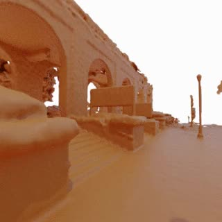
Konstantinos Rematas, Andrew Liu, Pratul P. Srinivasan, Jonathan T. Barron,
Andrea Tagliasacchi, Tom Funkhouser, Vittorio Ferrari
CVPR, 2022
project page / arXiv / video
Incorporating lidar and explicitly modeling the sky lets you reconstruct urban environments.
Barbara Roessle, Jonathan T. Barron, Ben Mildenhall, Pratul Srinivasan, Matthias Nießner
CVPR, 2022
arXiv / video
Dense depth completion techniques applied to freely-available sparse stereo data can improve NeRF reconstructions in low-data regimes.
|
Feel free to steal this website's source code. Do not scrape the HTML from this page itself, as it includes analytics tags that you do not want on your own website — use the github code instead. Also, consider using Leonid Keselman's Jekyll fork of this page. |